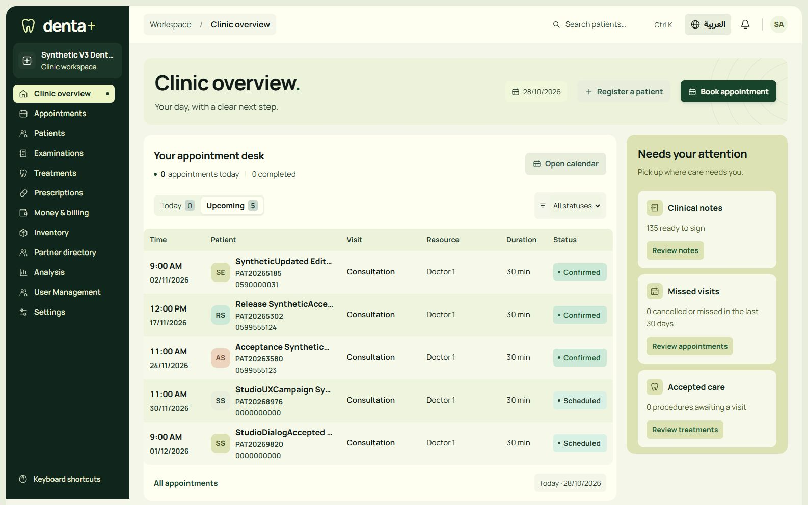
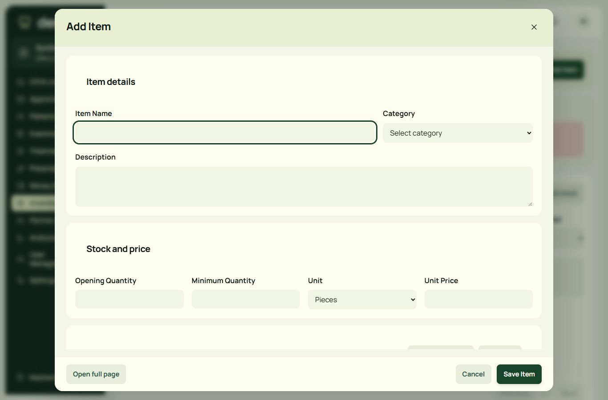
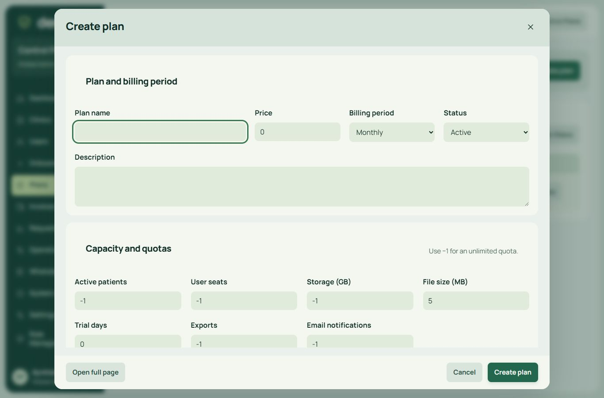

Studio: compact navigation and native creation
Actual CI4 screens, disposable synthetic data. Click each image for its full resolution. This is development evidence; production is unchanged.
Earlier workflow gallery ? Scoped acceptance receipt

dashboard - 1586 x 992 - EN
inventory - 1366 x 900 - ENfinance - 390 x 844 - ARsettings?tab=kiosk - 390 x 844 - AR
controlplane/plans - 1366 x 900 - ENcontrolplane/invoices - 390 x 844 - ARIntentional full-page workflows
- Chart-derived contract planning/signing and multi-step clinic onboarding keep the space required for their work.
- Context-dependent create links without a mounted authorized form retain a working full-page destination.
- Native clinical charts and legal/signed print evidence preserve their original rendering.
Native forms retain their original POST routes, CSRF, fields and server authority. Preference switches, permission checkboxes and disclosures have different semantics. No React or shadcn dependency was installed.